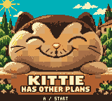
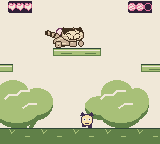
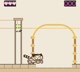

The courtyard
Eight screens introduce collection, wool recovery, gaps and bell gates. A route fork and a low table shot lead to the exit.
Level mapRelease 1.0.0 · 2026-10-02 · Game Boy Color / ModRetro Chromatic
A plush cat, three balls of wool per stage, and a Tuscan wedding. Three connected stages span 28 screens.
Download the release ROM · Release and checksum · Editable project

Eight screens introduce collection, wool recovery, gaps and bell gates. A route fork and a low table shot lead to the exit.
Level mapEleven screens of irrigation terraces, three short high ledges and a lower patrol route. A 64-pixel late channel leads to an open bell garden.
Level mapNine screens cross the wedding tables and chairs. A tabletop patrol and elevated final bell lead to the wedding photograph.
Level map| Action | Chromatic | Browser |
|---|---|---|
| Move and collect wool | D-pad; touch a ball | Arrow keys |
| Jump; hold for height | A | Z |
| Throw / high lob | B / Up+B | X / Up+X |
| Retry the current stage | Start | Enter |
| Return to cover | Select | P |
| Open / close stage selector | A or Start / B | Z or Enter / X |
| Confirm / continue | A | Z |
Each stage has three physical balls and starts Kittie with three hearts. He can carry up to three balls. Wool defeats goons and rings bells; it never returns automatically or boosts jumps. Retrieve it where it lands. Wool lost in water stays lost until retry; losing useful wool may require restarting the stage.
Goon contact costs a heart and causes knockback with brief protection. Gaps and zero hearts reset the whole stage. Goons patrol at constant speed. There are no checkpoints. Clearing a stage saves the next unlock to cartridge RAM. Replaying an earlier stage never removes later unlocks; mid-stage positions are not saved.
Kittie is male. His low oval face, embroidered eyes and grin, short legs and low body follow the original plush photographs. Reactions use his body and paws while his face stays fixed. Pink wool rides on his back; the taupe shape beneath his face is his paw. He cuddles wool while idle. The cover remains visible until A or Start opens the selector; B closes it.


Each stage has its own original melody and bass accompaniment. Throw, hit and bell sounds accompany play. The cover and wedding photo are quiet. These stage screenshots come from the final level reviews; their artwork is unchanged in this release.
The exact downloadable cartridge completed the courtyard, revised grove and revised banquet, returned to the cover, and recovered unlock value 3 after a native soft restart. Independent reviewers approved all three levels. The final combined run includes a grove retry; preserved inputs record that failure and the successful continuation.
The user reported a successful Chromatic playtest on 2026-10-02. Individual hardware checks and the tested cartridge hash were not separately enumerated. Browser persistence after closing the browser was not tested.
Release identity · Exact emulator inputs and evidence · Roadmap status
SHA-256: 08d2d326f59b1c0f2f86c9c1e9c60b79329e8d19dbf77190699826d1c7f05e7d